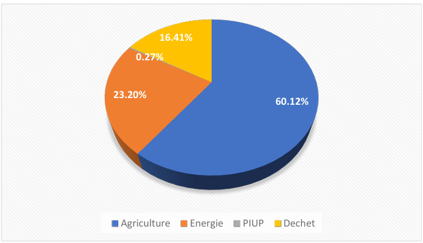
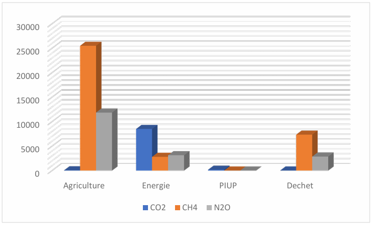
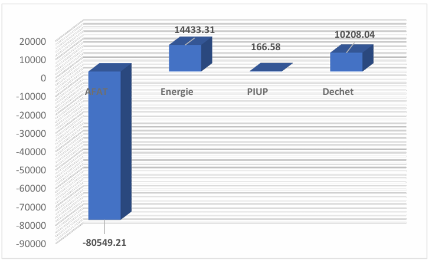
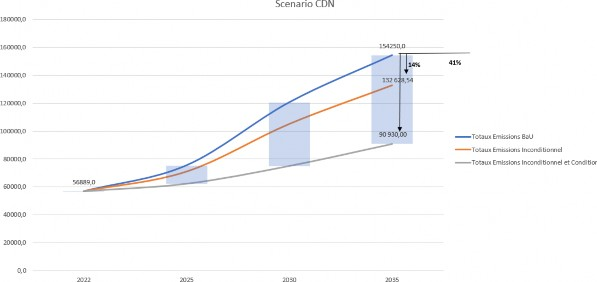
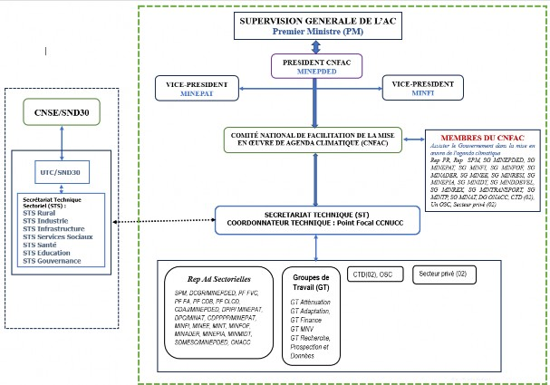

Table 1: Summary of key elements for understanding CDN 3.0
Summary of key elements for understanding CDN 3.0 |
|
Type of commitment |
GHG Reduction by Conditional and Unconditional Scenario |
|
Scope and GHGs covered |
In greenhouse gases, CH4 and HFCs cover the field of short-lived climate pollutants (SLCPs). were taken into account |
Period covered |
2026 - 2035 |
|
Reference year and base year |
BAU2035 Reference Scenario 2022 GHG inventory base (which corresponds to the year of production of the inventory that had been produced) by the country and which has not yet been validated). |
|
Level of commitment or reduction of GHG emissions |
The target greenhouse gas (GHG) reduction level for 2035 is 41%. In absolute terms, this commitment translates to by an estimated emission level of 63,157.46 Gg CO₂ equivalent. The implementation of these measures is distributed as follows: 2030: 38%
In the aforementioned commitments, the reductions related to the SLCP will contribute to the objective international of 30% for the CH4 fraction in the greenhouse gases concerned. |
|
Priority sectors covered |
The priority sectors are: (add a few key categories)
|
|
Global Warming Potential (GWP) |
Metrics: Global Warming Potential (GWP) in accordance with the guidelines of the Fifth Assessment Report IPCC assessment (AR5). The Global Warming Potential (GWP) values used are: CO₂ = 1 (by convention) CH4 = 28; N2O = 265; HFCs 12,400; PFC -116: 11,100;SF6: 23500 |
|
Emissions Estimation Methodologies |
Methodologies: IPCC Guidelines 2006 for Greenhouse Gas Inventories.
- The 2013 best practice guides, including revised supplementary methods. |
Implementation costs by 2035 |
USD 40,933.106 Million, or 22,513.208 Billion FCFA. |
Cameroon has submitted its Intended and Determined Contribution (INDC) to the Secretariat of the United Nations Framework Convention on Climate Change (UNFCCC) in 2015 and ratified the Agreement Paris, January 2016. This document, then considered the first Determined Contribution at the level Cameroon's National Development Plan (NDP) outlines the objectives for reducing greenhouse gas (GHG) emissions and the proposed adaptation measures. In 2021, on the eve of COP26 in Glasgow, the country submitted its second NDC aligned with its National Development Strategy 2020-2030 (SND 30) with an ambition of 35% reduction in GHG emissions, therefore 12% unconditional and 23% conditional on international support.
In accordance with Articles 4.2, 4.3, 4.9 and 4.11 of the Paris Agreement and other relevant provisions of This Agreement, Cameroon updates its second NDC (mitigation and adaptation) for the period 2026-2030 and 2030-2035. The content of this update builds on the progress made under its previous NDC, New policies such as the SND30, national and sectoral plans. NDC 3.0 is a synthesis of detailed and relevant assessments of mitigation and adaptation measures targeting increased climate ambition, complemented and supported by in-depth data analysis contextualized. It is also the result of an inclusive process of stakeholder consultations and the the country's determination to contribute to a global mobilization to combat the harmful effects of Climate Change.
To this end, in its NDC 3.0, Cameroon intends to reduce its GHG emissions by 38%, or 13% unconditional and 25% conditional (with a reduction of 45,101.69 Gg CO₂eq compared to the BAU) by 2030 in consistency with the SND targets of 30 and 41%, i.e., 14% unconditional and 27% conditional (with a reduction of 63157.46 Gg CO₂eq compared to the BAU) by 2035 aligned with paragraph 37 of the " Global Stock Take (GST) and Cameroon's vision of an emerging country by 2035. This will be achieved without slowing down its growth, by prioritizing mitigation options with high co-benefits, by strengthening the the country's resilience to climate change, including strengthening its mechanisms and tools implementation, in order to facilitate the achievement of these objectives.
Cameroon, within the Congo Basin, includes ecosystems representative of the African continent, which It is described as Africa in miniature. The territory covers an area of 475,442 km2, and it stretches over 1,500 km from South to North (2-13°N) and 800 km from West to East (9-16°E), with a population growth rate annual growth of 2.5% (INS 2025). This rate reaches 4.3% in cities. Uncontrolled urbanization is one of the the most remarkable phenomena of recent years. Thus, the urbanization rate fell from 55% in 2020 to 53% in 2023. 50% of the Cameroonian population lives in neighborhoods of precarious, often illegal, housing.
In terms of climate, its wide latitudinal extent means that it experiences a shift from a single-mode rainfall pattern deficient in agroecological zone (ZAE) Sahelian (500 to 800 mm) with a unimodal rainfall (1500-2000 mm) in ZAE high savannas and high plateaus, a relatively abundant bimodal rainfall (1800 to 2800 mm) in forested areas and significant unimodal rainfall (3000-8000 mm) in coastal areas. The temperature The average temperature itself varies from one environment to another and is between 20°C and 35°C with a thermal range ranging from 3°C to over 12°C.
From a biological perspective, Cameroon has six (06) main types of ecosystems, with great diversity agropastoral production systems. The flora is dominated by steppe and Yaérés in the Far North; the savannah in the North, the Adamawa region and the western highlands; the semi-deciduous forests in the Central-South, then evergreen forests and mangroves in the coastal zone. Cameroon occupies the fourth ranked fifth in terms of flora richness and fifth in terms of faunal diversity in Africa with 8300 plant species, 335 mammal species (SPANB II, 2012).
Furthermore, this floral and faunal heritage is subject to multiple threats, among the most Importantly, it must be noted that illegal and unregulated forestry, wildlife, and mining activities are rampant. uncontrolled land use for slash-and-burn agriculture and uncontrolled development sustainable agribusiness). The estimated net annual deforestation rate of 0.6% (FAO, 2020) coupled with a The low rate of reforestation (0.1%) suggests a growing decline in biological diversity.
The contribution of deforestation to climate change and the vulnerability of local populations and indigenous peoples are undeniable. Cameroon possesses a significant forest massif that is increasingly degraded by agropastoral activities as well as mining and structuring projects, to which is added a Significant population growth. Indeed, the Cameroonian population in 2025 is estimated at approximately 29.12 millions of inhabitants with an average density of 61.22 inhabitants/km2, which however varies from 7 to 200 inhabitants/km2 depending on the region of the country and a growth rate of 35%. (INS 2025)
This uneven density is a major factor in the degradation of arable land and landscapes. forests, particularly in the northern part and the western highlands. However, the majority The rural population of Cameroon is dependent on the livelihoods of agricultural activities and pastoralism in a context where landscape and land productivity is increasingly declining, with a risk of intensification of rural exodus.
The problem of forest landscape degradation is real throughout the country, but very varied. from one agroecological zone to another. With a strong focus on sustainability, the renewal of resources forestry and the restoration of degraded vegetation formations are probably among the challenges major current challenges that Cameroon is called upon to face in the coming decades, with the amplification of environmental upheavals and climate change.
The inherent challenges of these include deforestation and increased erosive potential of waterways. and the increase in flooding and landslides which induce a new dynamic in landscape with the acceleration of geomorphological processes. Consequently, this results in risks. important environmental factors.
The drought remains subtle yet pervasive in the northern part of the country. This is a factor restrictive for populations and a trigger-amplifying factor for diseases that expose more than 3,000,000 of souls (Study of the vulnerability of Cameroon, 2021).
The seasonal and almost uninterrupted frequency of extreme weather events over the past two decades, the instability of the length of the rainy seasons, recent floods, recurring droughts to which Cameroon is increasingly exposed, prove that climate change has ceased to be a purely scientific question and have become a real and pressing problem for our society, requiring urgent measures for the safeguarding and protection of human life.
From an economic standpoint, it is important to note that Cameroon's economy is one of the most diversified. of Africa. The real GDP growth rate is 3.5% in 2024. The primary sector registers 3.5%; the The secondary sector is experiencing a slowdown, reaching 1.2% in 2024, and the tertiary sector 4.5%. the same period (MINEPAT, 2024). The inflation rate, meanwhile, is 4.5% in 2024. The economy relies primarily in production sectors: agriculture, livestock farming, fishing and aquaculture, Forestry and silviculture. Agriculture employs over 60% of the population and remains the predominant sector. of the national economy both through its contribution to GDP and through its knock-on effects on other sectors of activity. The main cash crops are cocoa, coffee, tobacco, cotton, the bananas and pepper.
Despite significant potential identified in the mining sector, its contribution to GDP remains negligible. Mining activities primarily concern exploration, and secondarily exploitation and the transformation. It should be noted that the exploitation and transformation are essentially based on artisanal techniques.
Table 2: Physical Presentation of CameroonContinent |
Africa |
Sub-Region |
Central Africa
|
Coordinates |
2° - 13° North latitude, 9° - 16° East longitude |
| Area |
|
Coasts |
402 km |
|
Borders |
Central African Republic 822 km (East), Chad 1,122 km (East and Northeast), Republic of the Congo 520 km (Southeast), Equatorial Guinea 183 km (South), Gabon 298 km (South), Nigeria 1,720 km (West and Northwest) |
Maximum altitude |
4,095 m (Mount Cameroon) |
Minimum altitude |
0 m (Atlantic Ocean) |
Longest watercourse |
Sanaga (918 km) |
Largest body of water |
Lake Chad
Climate constraints are putting increased pressure on the main sectors that fund the national budget. It increases social vulnerabilities and contributes to the degradation of the infrastructure necessary for the activity. economic. The fight against the effects of climate change reveals both for adaptation and for Mitigation requires additional financial resources beyond those already needed to meet the imperatives. already known to development. To successfully achieve the transformational shift towards a low-emission economy of GHG, significant investments for the implementation of appropriate technologies must be developed, targeting all sectors at stake. The necessary funding will support implementation programs and projects consistent with the commitments made, respecting a distribution that takes into account the highest emitting sectors and the most vulnerable agro-ecological zones.
To reconcile its ambitions for economic development with the imperatives of combating change Regarding climate change, the Government commits to: Strengthening measures for adapting to and mitigating the effects of climate change and management environmental to guarantee sustainable and inclusive economic growth and social development "
Thus, with regard to the energy sector, the country intends to pursue its policy of developing a mix energy based on hydroelectric power, photovoltaics, thermal power using natural gas and Energy from biomass. For the rural sector, the Government has opted in particular for a policy intensification promoting the most innovative, climate-resilient technologies. Regarding the Regarding waste, the plan includes continuing the implementation of the national waste strategy, among other things the operationalization of a specific instrument, namely the waste exchange, involving local authorities, the sector private and state.
Like other Central African countries located around the Gulf of Guinea, Cameroon has significant offshore and onshore oil fields, most of which have yet to be discovered. He envisions to intensify its exploration efforts to increase its reserves and boost its oil production and of gas, with a focus on new onshore basins in the northern part of the country.2 The development of some basins has been delayed due to the fall in the price of a barrel of oil. In order to To honor its commitments made under this NDC, Cameroon absolutely must attract investors to explore and develop structuring projects related to hydroelectricity, gas and other clean energy sources such as hydrogen and ammonia.
As for the forestry sub-sector, the forests of the Congo Basin, of which approximately 12% of the area is found in Cameroon have a vital role in regulating GHGs, in addition to playing a decisive role on the regulation of the regional climate and the water cycle. For this forest massif to continue playing this role Of paramount importance to humanity, the international community must redeploy without delay and with greater determination. and methodology, the various instruments capable of effectively contributing to mitigation efforts and adaptation. As much as some countries in the sub-region, Cameroon needs support to maintain its commitments made within the framework of its NDC are crucial.
While the continent's urban population growth rate stood at 5.4% in 2015, Africa The central plant, for its part, had a rate of 6.2%. These figures imply at least one major challenge: that of the Food security for an urban population whose needs for food products are rapidly increasing. In addition to its role as the undisputed breadbasket of Central Africa, Cameroon exerts more influence than other countries in the Due to its strong population growth and that of neighboring countries, the sub-region is under significant pressure on its natural resources and biomass to continue meeting demand. growing demand for food from its domestic market but also from those of neighboring countries.
Regarding the solid mining sub-sector, the mining sector, through the Mining-Metallurgy pillar, is one levers to enable the achievement of emergence by 2035. Therefore, the mining sector is called upon to experience exponential growth by 2030. For the improvement of governance in the In this sector, Mining Law No. 2023/014 of December 19, 2023, establishing the Mining Code, has been promulgated. Furthermore, Several large industrial mining projects are currently being implemented or agreements are under negotiation. mining. The recent creation of the National Mining Company (SONAMINES), the work carried out by the Project Capacity Building in the Mining Sector (PRECASEM) appears as one of the responses to this government vision (SND30). The iron ore reserve consists primarily of the deposit of Nkout, estimated at 2 billion tons, expandable to 4 billion, on the one hand, and the Mbalam iron ore basin, whose annual production capacity would be 40 million tonnes over 12 years in its first phase of development. The work relating to the exploitation of the Lobé iron ore deposit in Kribi and that of Akom II in Greater Zambia continues through the acquisition and transfer of equipment. The rutile reserves of countries would be estimated at 3 million tonnes, which is the second largest potential in the world after Sierra Leone. Regarding alumina ore, the fifth of the bauxite plateaus explored in 2020 shows reserves estimated at 892 million tonnes, of which 250 million tonnes have a very high aluminium content.
However, the implementation of these large mining projects would have significant impacts on the environment. if mitigation measures were not taken into account. It should be noted that more than 70% of the reserves The country's mining operations are located in forested areas. As part of the exploitation of these reserves, the The government will ensure compliance with environmental standards as provided for by the regulations. national.
Among the challenges that exacerbate Cameroon's vulnerability, the critical situation in the regions must be highlighted. northern regions of the country are facing climate change. These regions are prone to droughts. recurring and various extreme weather phenomena, including floods and landslides, dust storms. Thus, the Far North region alone is suffering from a grain deficit of 30,000 tonnes, the food insecurity rate there is 33.6%. The presence of refugees (57,000) and displaced persons (223 642) also exert strong pressure on natural resources such as water points and pastures. The socioeconomic implications of these vulnerabilities are numerous. To respond to crises Given the resulting economic downturn, the State logically devotes the bulk of its modest financial resources to social problems related to health, food security and post-disaster emergency situations.
As long as the resilience of the Sudanese-Sahelian regions of the country, and to a lesser extent that of the regions of The West and Northwest will not see significant improvement; the State's own resources are necessary. to address the challenges related to climate change will not be able to meet the challenges at hand.
From a security standpoint, it is known that Cameroon faces instability in three agro-ecological zones. The Far North region, most exposed to the effects of climate change, is plagued by attacks from the The Boko Haram sect and the Northwest and Southwest regions have been shaken by a crisis that has been raging since 2016. financial resources mobilized by the State to restore peace in these regions where instability is becoming endemic diseases have largely contributed to eroding the resilience of the country's economy.
In light of the above, the government plans to mobilize all necessary resources for this purpose. Relevant: financing, technology transfers and capacity building to meet commitments international and achieve its socio-economic development goals.
In pursuit of its vision regarding climate change, which is to "transform constraints “Climate-related development opportunities,” Cameroon plans to build a resilient economy in Climate change, low-carbon and inclusive, contributing to the reduction of social vulnerabilities, economic and eco-systemic while respecting its commitments within the framework of the implementation of global goals.
This view is based on the theory of inverse determinism, which posits that transformations positive structural socioeconomic changes can be triggered by a concerted effort to overcome constraints of the physical environment. Climate change can therefore represent a real opportunity to capitalize on the transition to a green economy, the fight against poverty, but beyond strengthening social cohesion through the interplay of social solidarity necessary for reducing differential vulnerabilities.
To reconcile its legitimate ambitions for economic growth while taking into account the imperatives for reversing the negative effects of climate change, the Government has dedicated one of its global objectives to SND30 in the fight against climate change: " Strengthening measures for adapting to and mitigating the effects of climate change and management environmental to guarantee sustainable and inclusive economic growth and social development ", which is consistent with the commitments made within the framework of its NDC.
The implementation of the defined policies, as well as the planning tools developed in this area mitigation and adaptation measures contribute to achieving climate change objectives and to the socio-economic development of the country.
In 2022, the Agriculture sub-sector (excluding forestry) remained the largest source of emissions of GHG emissions reached 37,391.87 Gg CO2 eq, representing 60.12% of total emissions (Fig. 1). The Energy sector is second in this regard. position, accounts for 23.20% of emissions, followed by the waste sector with 16.41%. The process sector Industrial and product use (PIUP) comes last with 0.27%. (National IGES report in (update course, 2025). This IGES national report indicates that Cameroon generally presents a The net emissions/absorption balance is approximately -32037.14 Gg CO₂ Eq. This balance is largely influenced through the significant absorptions made by forests and other carbon sinks (-146715.95 Gg CO₂ Eq), despite significant emissions in certain sectors.

Figure 1: Share of emissions by sector (in percentage) for the year 2022

Figure 2: GHG emissions by sector (in Gg CO₂ eq) for the year 2022

Figure 3: GHG emissions by sector (in Gg CO₂ eq) for the year 2022The table below presents the total and sectoral GHG emissions in Cameroon in 2022, expressed in gigagrams of CO₂ equivalent (Gg CO₂eq).
Table 3: Summary of emissions for the year 2022Source: IGES report, updated as part of the Biennial Transparency Report, 2025
Sectors |
CO₂ equivalent emissions (Gg) |
|||||
Net CO₂(1)(2) |
CH4 |
N2O |
HFCs |
PFCs |
SF6 |
|
Total National Emissions and Absorptions |
-71882.43 |
35639.52 |
12451.55 |
NE |
286.85 |
0 |
1 - Energy |
8493.63 |
2804.2 |
3135.48 |
NE |
NO |
NO |
2 – Industrial Processes and Product Use |
166.58 |
NO |
NO |
NE |
286.85 |
NO |
3 - Agriculture, Forestry, and other Land Use |
-80549.21 |
25493.72 |
11852.02 |
NO |
NO |
NO |
3.A - Livestock |
NA |
13544.72 |
96.884 |
NO |
NO |
NO |
3.B - Earth |
-80595.34 |
NE |
NE |
NA |
NA |
NA |
3.B.1 – Forest lands |
-146715.95 |
NE |
NE |
NA |
NA |
NA |
3.B.2 – Cultivated Land |
32974.7 |
NE |
NE |
NA |
NA |
NA |
3.B.3 - Grasslands |
32212.43 |
NE |
NE |
NA |
NA |
NA |
3.B.4 – Wetlands |
0 |
NE |
NE |
NA |
NA |
NA |
3.B.5 – Establishments |
218.83 |
NE |
NE |
NA |
NA |
NA |
3.B.6 – Other lands |
714.64 |
NE |
NE |
NA |
NA |
NA |
3.C - Aggregate sources and non-CO₂ emission sources |
46.14 |
11949 |
11755.13 |
NO |
NO |
NO |
4 - Waste |
6.56 |
7341.6 |
2859.88 |
NE |
NE |
NE |
5 - Other |
NE |
NE |
NE |
NE |
NE |
NE |
Total emissions and absorptions in Gg CO₂eq |
-71882.43 |
31821 |
NA |
NA |
286.85 |
NA |
Difference in Absorption and Emission |
-32037.145 Gg |
|||||
NE= Not Estimated NA= Not Applicable NO= Not Occured
These proportions illustrate the predominance of emissions related to land use and energy. confirming the mixed nature of the Cameroonian economy, both agroforestry and dependent on fossil fuels.
The so-called “Business as Usual” (BAU) scenario projects continued growth in greenhouse gas emissions greenhouse gas (GHG) emissions without the implementation of additional mitigation measures. This scenario assumes:
An average annual growth in energy demand of 3%.
A marginal electrification of the vehicle fleet.
In this context, national emissions would increase by 5% between 2025 and 2030, and by 4% between 2030 and 2035, then would continue to grow at an average rate of 2% per year until 2050.
Analysis of national greenhouse gas inventories shows a differentiated evolution of emissions according to key categories between NDC 2.0 and NDC 3.0 (between 2010 and 2025).
Enteric fermentation (Agriculture): CH₄ emissions from enteric fermentation have slightly increased due to the growth of cattle and sheep herds, but the trend remains moderated thanks to the gradual spread of improved farming practices and optimized feeding.
Electricity production (Energy): CO₂ emissions have increased due to demand increasing energy demand and the expansion of thermal power plants, although the share of energy renewables have progressed significantly, increasing from around 65% to almost 75% of the electricity mix. This development reflects an improvement in energy efficiency and the beginning of a transition towards a a more carbon-efficient system.
Aggregate sources from fuel combustion (Transport and industry): An increase Sustained CO₂ emissions are observed in road transport and manufacturing industries. linked to urbanization and increased motorization. However, efficiency programs energy, electric mobility and industrial modernization planned in the NDC 3.0 should to reverse this trend in the medium term.
Land-use change and forestry (LULUCF): Deforestation remains a major source CO₂ emissions, but efforts to restore forest landscapes and reforestation community groups are beginning a gradual stabilization.
Overall, Cameroon's NDC 3.0 represents an upward reassessment of ambition. mitigation, based on the decarbonization of the energy sector, sustainable land management and the improvement of agricultural and industrial practices.
Cameroon's NDC 3.0 follows on from the previous one (NDC 2.0), while expanding its scope of action to integrate new categories of activities, emerging sectors and mechanisms market. It aims for a low-carbon transition consistent with the National Development Strategy 2020–2030 (SND30) and the Paris Agreement, while strengthening the socio-economic resilience of the country.
The principles that guide the definition of scope and coverage are: consistency with the national GHG inventories; the progressive inclusion of sectors with high reduction potential; the complementarity between mitigation and adaptation measures; and consideration of co-benefits socio-economic and environmental.

Fig. 4 Evolution of GHG emissions (Gg CO₂eq) from Cameroon according to different scenarios. Integrate into the figure shows the target values for the 2030-2035 horizon
Broadcasts based on three integrated scenarios:
The new total reduction targets: 41% (absolute value 63157.46 Gg CO₂eq) in 2035 compared to the BAU.
The numerical targets for each measure are expressed in Gg CO₂eq avoided and broken down to contribute to 13% unconditional And 25% conditional (2025-2030), totaling 38% (in absolute value 45101.69 Gg CO₂eq) in 2030 compared to the BAU. The 41% in 2035 apply to the total BAU and will be allocated between national and international measures according to the same proportions.
We have the following for the three scenarios:
BAU (Business As Usual)
With Measures 13%
With Additional Measures (very ambitious, up to 38% in 2030, i.e., 45101.69 Gg CO₂eq in absolute value, 41% in 2035, i.e.: 63157.46 Gg CO₂eq, national funding + conditional)
The NDC 3.0 aims for ambitious reductions compared to the BAU, with sectoral contributions specific
Table 4: Scenario of quantitative reduction targets 2025-2030Sector-specific reductions in 2025-2030 (Unconditional + Conditional) |
||||||
Sectors |
Agriculture |
Forestry |
Energy |
Waste |
Industry |
Totals |
Amount reduction (Gg CO₂eq.) |
1592.76 |
18851.99 |
20744.99 |
3608.00 |
303.95 |
45101,69 |
Share of each sector in the total reduction (%). |
3.53 |
41.80 |
46.00 |
8.00 |
0.67 |
100 |
Sector-specific reductions in 2025-2035 (Unconditional + Conditional) |
||||||
Sectors |
Agriculture |
Forestry |
Energy |
Waste |
Industry |
Totals |
Amount reduction (Gg CO₂eq.) |
2126.08 |
20073.99 |
34296.99 |
6099.00 |
561.40 |
63157,46 |
Share of each sector in the total reduction (%). |
3.37 |
31.78 |
54.30 |
9.66 |
0.89 |
100 |
2025 : 13172.14 GgCO₂eq (17.46% of the BAU of 75427.0 Gg CO₂eq).
2030 : 45101.69 Gg CO₂eq (38% of the BAU of 120538.0 Gg CO₂eq).
2035 : 63157.46 Gg CO₂eq (41% of the BAU of 154250.0 Gg CO₂eq).
Over the past 20 years, Cameroon has reduced its emissions through reforestation and by doing to shift its energy mix towards renewable energy. This has resulted in emission reductions of CO2 emissions per capita decreased from 9.32 tonnes in 1998 to 4.89 tonnes in 2018. Nevertheless, investments are being made. necessary to accelerate these efforts through sustainable forest management, climate-friendly agriculture smart energy transition and the circular economy. Cameroon intends to implement these. mitigation actions below, based on the guidelines and reduction options consistent with the pillars of its national development strategy 2020-2030 (SND30) and the SDGs.
Table 6: Priority Mitigation Measures 2025-2030|
Agriculture/Fishing/Livestock/Forestry
Key challenges in the agriculture/livestock/fishing sector: (i) Seeking self-sufficiency, security food, agribusiness development and (ii) Improvement of productivity and competitiveness.Key challenges in the forestry sector: (i) Sustainable forest management through harvesting and enhancing the value of productive forests within the framework of management plans, (ii) Contribution to economic growth and the fight against poverty through the the return of a portion of tax revenue to local authorities, job creation, the creation of communal forests in the Permanent Forest Estate (DFP) and community forests in the Non-Permanent Forest Domain (DFnP) (iii) Conservation of biodiversity through the strengthening the national network of protected areas, (iv) Ensuring the coherence of the land system through to zoning plans. KEY MESSAGE: "Agriculture has been and remains the cornerstone of the country's ambition for emergence, but it It is possible and even necessary to limit one's carbon footprint. Sustainable forest management will increase the carbon sink. This low-carbon growth will bring significant benefits. Co-benefits (economic and social development, job creation, improvement of the environment and health, etc). |
||
GUIDELINES IN RELATION TO SND 30 |
MITIGATION MEASURES SELECTED |
Selected Discount Options |
|
1) Ensuring consistency in rural planning and development agriculture while limiting deforestation/degradation |
Sustainable development of rural and urban areas; - Strengthening sustainable management and the enhancement of forests and biodiversity, in particular thanks to spatial monitoring of land; -Rehabilitation of degraded lands and reforestation of anthropogenic savannas, and strengthening of carbon sinks in degraded forests. |
|
|
2) Intensification of environmentally friendly agricultural, livestock and fisheries production and helping to limit deforestation/degradation |
|
Reduction of CH4 in rice crops |
|
3) Promotion of practices that improve agricultural production capacities and add value the resources of the environment |
- Limiting methane emissions from rice cultivation by minimizing flooding; -Strengthening partnerships and collaborations to improve soil productivity, the implementation of work of agricultural innovation; developing sustainable, conservation or responsible agriculture |
|
|
Energy/Waste Key energy challenges: (i) Improving access to electricity for the population and industries by quadrupling production capacity by 2035 to reach 6 GW; (ii) increase the use of renewable energies in electricity production, especially in areas difficult to connect to the electricity grid and (iii) make energy efficiency a national priority. Major challenges related to waste: Improving urban sanitation, particularly by making waste a... resource for energy production KEY MESSAGE: "Increase the share of renewable energies, excluding large-scale hydropower, in the energy mix to 25%" electric by 2035 |
||
GUIDELINES IN RELATION TO SND30 |
MITIGATION MEASURES SELECTED |
Selected Discount Options |
|
4) Control of energy consumption of systems through an energy efficiency policy volunteer |
|
|
5) Efficient resource utilization to move towards a circular economy |
|
|
6) Development of energy production from renewable sources |
|
|
The investments needed for mitigation measures to achieve the 2030 target are valued at USD 4,674.788 million, or 2,571.133 billion, and USD 7,169.303 million, or 3,943.116 billion FCFA by 2035. The table below provides more details on the financial needs in terms of mitigation
Table 7: Mitigation investment costs (in USD)|
SECTORS |
Sub-sectors |
Measures |
Targeted Gases |
Reduction potential (Gg CO₂eq) |
Areas of intervention |
Objectives |
Cost in USD |
|||
2030 |
2035 |
2030 |
2035 |
2030 |
2035 |
|||||
|
AGRICULTURE |
Climate-smart agriculture | Reduction of CH4 in rice cultivation by intermittent flooding |
CH₄ |
786.97 |
1094.91 |
Far North, North Adamawa Northwest, Center |
230000 ha |
320000 ha |
55 087 900 |
76 643 700 |
Reduction of N₂O emissions through the use of nitrification inhibitors |
N₂O |
406.64 |
520.38 |
National |
1,000,000 ha |
2000000 ha |
28,464,800 |
36,426,600 |
||
|
Production and use of composts and biofertilizers |
N₂O |
38.60 |
49.40 |
National |
2000 tonnes |
4000 tonnes |
2,702,000 |
3,458,000 |
||
Implementation of a high-yield industrial nursery system |
CO₂ |
177.58 |
227.25 |
National | 25 million plants per year |
25 million plants per year |
12,430,600 |
15,907,500 |
||
Restoration of degraded soils through the valorization of organic waste |
N₂O CO₂ CH₄ |
1.27 |
1.62 |
National |
500 ha of soil restored and 200 km of hedges planted |
/ |
88,900 |
113,400 |
||
Rehabilitation and modernization of the CDC |
N₂O CO₂ CH₄ |
Under study |
Under study |
Southwest |
Under study |
Under study |
0 |
0 |
||
Improving access to feed for cattle |
Fat supplementation in ruminant feed (% of oilseed meal added) |
CH₄ |
4.12 |
5.27 |
Far North, North Adamawa Northwest |
5% fat supplement |
5% fat supplement |
288,400 |
368,900 |
|
|
Development of forage crops |
CO₂ |
177.58 |
227.25 |
Far North, North, Adamawa West |
12500 ha |
20000 ha |
12,430,600 |
15,907,500 |
||
Agriculture subtotal |
111 493 200 |
148,825,600 |
||||||||
|
FORESTRY |
Reforestation |
CO₂ |
11509.00 |
12255.02 |
Far North, North, Adamawa West |
5000000 ha of reforested land |
8000000 ha of reforestation |
575,450,000 |
612,751,000 |
|
|
Reducing GHG Emissions from Deforestation and Forest Degradation: Avoid Deforestation |
CO₂ |
2877.25 |
3063.75 |
National | 1,000,000 hectares of deforestation avoided |
2,000,000 hectares of deforestation avoided |
143,862,500 |
153,187,500 |
||
Assisted Forest Regeneration |
CO₂ |
1438.62 |
1531.88 |
National |
500,000 ha of assisted regeneration |
1,000,000 assisted regenerations |
71,931,000 |
76,594,000 |
||
Reforestation through agroforestry |
CO₂ |
7.19 |
7.66 |
National | 3000 ha of agroforestry area |
5000 ha of agroforestry area |
359,500 |
383,000 |
||
|
Development of Forest Plantations (PNDPF) |
CO₂ |
16.87 | 17.96 |
Bazzama, Laf, Mélap, Mayo Oulo, Koutaba and Baleng |
394.2 ha of Forest plantations |
394.2 ha of Forest plantations |
843,500 |
898,000 |
||
|
Development and enhancement of Protected Areas (PNDVAP) |
CO₂ |
3003.06 |
3197.72 |
National |
Under study |
Under study |
150,153,000 |
159,886,000 |
||
Subtotal Forestry |
942 599 500 |
1,003,699,500 |
||||||||
|
ENERGY |
Household energy efficiency |
Efficient LED lighting |
CO₂ |
46.67 |
77.13 |
National |
750000 of light bulbs |
10000000 of light bulbs |
7,000,500 |
11,569,500 |
Efficient lighting thanks to LEDs replacing compact fluorescent bulbs. |
CO₂ |
40.55 |
50.91 |
National |
700,000 light bulbs |
1,000,000 light bulbs |
6,082,500 |
7,636,500 |
||
|
Use of improved cookstoves |
CO₂ |
2497.42 |
4126.86 |
National |
1000000 Household |
3000000 Home |
374,613,000 |
619,029,000 |
||
|
Use of eco-friendly charcoal stoves |
CO₂ |
182.20 |
301.08 |
National |
900000 Household |
1000000 Home |
27,330,000 |
45,162,000 |
||
|
LPG fireplaces are replacing wood-burning fireplaces |
CO₂ |
2556.44 |
4224.39 |
National |
1000000 Household |
2,000,000 Households |
383,466,000 |
633,658,500 |
||
|
Use of low-energy electric cookers |
CO₂ |
9.31 |
15.39 | National |
600,000 Households |
9000000 Households |
1,396,500 |
2,308,500 |
||
|
Using induction cooktops |
CO₂ |
21.68 |
29.12 |
National |
2600 Foyer |
3500 Fireplaces |
3,252,000 |
4,368,000 |
||
|
Energy efficiency of industries |
Use of low-consumption electric generators |
CO₂ |
10.04 |
16.06 |
National |
8000 kW saved |
1000 kW saved |
1,506,000 |
2,409,000 |
|
|
Efficiency in industries |
CO₂ |
8795.25 |
14533.70 |
National |
10% of demand |
14% of demand |
1,319,287,500 |
2,180,055,000 |
||
Use of low-consumption electrical equipment |
CO₂ |
353.31 |
583.82 |
National |
700 kW saved |
1000 kW saved |
52,996,500 |
87,573,000 |
||
|
Energy efficiency of services |
Office lighting with compact fluorescent lamps | CO₂ |
2.35 |
3.89 |
National |
80,000 bulbs |
100,000 light bulbs |
352,500 |
583,500 |
|
Office lighting with LED bulbs |
CO₂ |
2.67 |
4.41 |
National |
70,000 bulbs |
100,000 light bulbs |
400 500 |
661,500 |
||
Street lighting with LED bulbs |
CO₂ |
70.60 |
116.66 |
National |
700,000 light bulbs |
3,000,000 light bulbs |
10,590,000 |
17,499,000 |
||
|
Replacing conventional air conditioners with low-energy air conditioners |
CO₂ HFC |
15.42 |
20.7 |
National |
8000 air conditioners |
10,000 air conditioners |
2,313,000 |
3,105,000 |
||
|
Use of energy-efficient commercial dishwashers |
CO₂ |
6.97 |
11.52 |
National |
800 machines per day |
1000 machines per day |
1,045,500 |
1,728,000 |
||
Use of low-energy hotel refrigerators |
CO₂ HFC |
0.24 |
0.39 |
National |
8000 refrigerators |
10,000 refrigerators |
36,000 |
58,500 |
||
|
Energy Distribution |
Efficient electrical grids |
CO₂ |
7.78 |
12.85 | National | 150 GWh of energy loss reduced |
250 GWh of energy loss reduced |
1,167,000 |
1,927,500 |
|
|
Reduction of fugitive emissions |
Reduction of flaring on the oil field |
CO₂ |
1406.61 |
2324.35 |
National |
9,000,000 cubic feet per day |
100,000,000 cubic feet per day |
210,991,500 |
348 652 500 |
|
Reducing flaring in oil refineries |
CO₂ |
1293.63 |
2137.66 |
National |
8,000,000 cubic feet per day |
100,000,000 cubic feet per day |
194,044,500 |
320,649,000 |
||
Reducing leaks in gas pipelines |
CO₂ CH₄ |
125.05 |
206.64 |
National |
8 cubic feet per year |
12 cubic feet per year |
18,757,500 |
30,996,000 |
||
|
Eco-friendly coal production |
CO₂ |
972.87 |
1607.62 |
National |
900,000 tonnes per year |
1,000,000 tonnes per year |
145,930,500 |
241,143,000 |
||
|
Renewable energies |
Installation of a mini hydroelectric power plant connected to the main grid |
CO₂ |
140.62 |
213.03 |
Far North, North, Adamawa West |
5 kW installed power |
7 kW of installed power |
21,093,000 |
31,954,500 |
|
|
Off-grid mini hydroelectric power plant |
CO₂ |
120.62 |
199.32 |
Far North, North, Adamawa West |
60 kW of installed power |
80 kW of installed power |
18,093,000 |
29,898,000 |
||
|
Installation of a PV pump to replace the diesel pump |
CO₂ |
79.00 |
130.54 |
Far North, North, Adamawa West |
7000 solar pumps |
10,000 solar pumps |
11,850,000 |
19,581,000 |
||
|
Installation of photovoltaic panels, large network |
CO₂ |
9.08 |
15.01 |
Far North, North, Adamawa West |
100 MW of installed capacity |
150 MW of installed capacity |
1,362,000 |
2,251,500 |
||
|
Installation of a solar/diesel mini-grid |
CO₂ |
3.63 |
6.00 |
Far North, North, Adamawa West |
900 kW installed capacity |
1200 kW installed capacity |
544,500 |
900,000 |
||
Installation of solar LED lights |
CO₂ |
58.41 |
96.52 |
National |
800,000 LED bulbs |
1,000,000 LED bulbs |
8,761,500 |
14,478,000 |
||
|
Installation of photovoltaic panels, small isolated grid, 100% solar |
CO₂ |
163.47 |
270.12 |
Far North, North, Adamawa |
1 MW of installed capacity |
2 MW of installed capacity |
24,520,500 |
40,518,000 |
||
Installation of solar streetlights |
CO₂ |
752.30 |
1243.14 |
National |
150,000 light bulbs installed |
250,000 light bulbs installed |
112,845,000 |
186,471,000 |
||
|
Transport |
Bus Rapid Transit (BRT) |
CO₂ |
61.69 |
101.94 |
Douala and Yaoundé |
50 km of linear space |
80 km of linear space |
9,253,500 |
15,291,000 |
|
Substitution of personal fossil fuel cars with electric cars |
CO₂ |
91.37 |
150.99 |
National |
500 electric vehicles |
900 electric vehicles |
13,705,500 |
22,648,500 |
||
|
Introduction of 18m electric buses |
CO₂ |
420.13 |
694.24 |
National |
200 electric buses |
400 electric buses |
63,019,500 |
104,136,000 |
||
|
Substitution of individual transport by mass transport (trains, carpooling, etc.) |
CO₂ |
78.07 |
109.11 |
Littoral, Centre Adamaoua |
2000 people per day |
3500 people per day |
11,710,500 |
16,366,500 |
||
Introduction of natural gas-powered vehicles |
CO₂ CH₄ |
249.39 |
412.11 |
National |
500 |
1000 |
37,408,500 |
61 816 500 |
||
|
Construction of a hydrogen and ammonia production plant |
CO₂ CH₄ |
100.15 |
249.77 |
Kribi |
Under study |
Under study |
15,022,500 |
37,465,500 |
||
Energy subtotal |
3,111,748,500 |
5,144,548,500 |
||||||||
|
WASTE |
Biogas Production |
Biogas in rural farms using non-renewable firewood |
CH₄ |
91.72 |
102.84 |
National | 7000 tonnes per production unit |
10,000 tonnes per production unit |
11,006,400 |
12,340,800 |
Biogas in pig farms |
CH₄ |
724.01 |
811.73 |
West, Far North |
Farm with a capacity of 840,000 pigs |
Farm with a capacity of 1,000,000 pigs |
86 881 200 |
97,407,600 |
||
Biogas from industrial wastewater |
CH₄ |
138.92 |
155.75 | National | 7 production units installed |
10 production units installed |
16,670,400 |
18,690,000 |
||
|
Biogas produced from municipal waste |
2226.21 |
4219.15 |
National |
15,000 tonnes per year |
20,000 tonnes per year |
267 145 200 |
506,298,000 |
|||
Circular Economy |
Waste Exchange |
CO₂ CH₄ |
427.14 |
809.53 |
National |
30,000 tonnes of waste recycled |
30,000 tonnes of waste recycled |
51 256 800 |
97,143,600 |
|
Waste subtotal |
432,960,000 |
731,880,000 |
||||||||
|
INDUSTRY |
Cement Plant |
Clinker Substitution in Cement Production |
CO₂ |
164.42 |
328.85 |
Figuil |
50,000 tonnes of cement per day |
70,000 tonnes of cement per day |
41,105,000 |
82 212 500 |
|
Aluminum Plant |
Reduction of PFCs in aluminum production |
PFCs |
139.53 |
232.55 |
Edéa |
600,000 tonnes of aluminum per year |
1000000 tonnes of aluminum per year |
34 882 500 |
58,137,500 |
|
Industry subtotal |
75,987,500 |
140,350,000 |
||||||||
Total financial need |
4,674,788,700 |
7,169,303,600 |
||||||||
a) Overall Objective (unconditional and conditional measures)
In its Nationally Determined Contribution (NDC3.0), Cameroon is raising its level of ambition climate by integrating international financial support up to 25% and setting an overall target of a 41% reduction in greenhouse gas emissions by 2035, compared to the baseline scenario (BAU 2035). This strengthened commitment reflects a significant progression compared to the second version of the CDN, which aimed for a 35% reduction. To achieve this goal, 56 reduction options were identified in key sectors, combining unconditional measures, which the country commits to implementing works with its own resources, and conditional measures, dependent on international support adequate. In absolute terms, the implementation of unconditional actions will reduce emissions of 21,565.96 Gg CO₂eq by 2035. Furthermore, subject to technical, financial and With appropriate technology, a further reduction effort can be achieved through measures conditional. This reaffirmed vision reflects Cameroon's firm commitment to contributing effectively to global efforts to combat climate change, while strengthening its resilience and continuing its sustainable development.
b) Unconditional measures
The unconditional mitigation measures scenario includes a set of emission reduction options that Cameroon commits to implementing within the framework of its Nationally Determined Contribution (NDC), by leveraging its internal resources and capabilities, and taking into account its national context. Looking ahead By 2035, it aims for a 14% reduction in GHG emissions compared to the BAU scenario, corresponding to emissions estimated at 154,250.0 Gg CO₂eq. The implementation of these measures will reduce 21,565.96 Gg CO₂eq, representing 14% of projected emissions.
|
Information to facilitate clarity, transparency and understanding (ICTU) |
|
1. Quantifiable information about the reference point |
|
Type of contribution |
An emissions reduction target coupled with mitigation and adaptation actions |
|
a. Reference year(s), base year(s), reference period(s) or other starting point. |
Base Year: 2022 GHG Inventory Reference Scenario: BAU2035 |
|
b. Quantifiable information on the benchmark indicators, their values in the year/period reference year (and, where applicable, in the target year). |
For the base year, the inventory indicates that Cameroon generally has a capacity net absorption of approximately 25,772.45 Gg CO₂eq. The implementation of these measures will allow reduce 63,157.46 Gg CO₂eq by 2035. This balance is largely influenced by significant absorptions achieved by forests and other carbon sinks (-144928.2 Gg CO₂eq), despite emissions significant in certain sectors. BAU2035 Emissions: overall target of reducing greenhouse gas emissions by 41% the 2035 horizon, compared to the reference scenario (BAU 2035) In absolute terms, the implementation of unconditional actions will reduce emissions of 21,565.96 Gg CO₂eq by 2035. Furthermore, under subject to appropriate technical, financial and technological support, an additional effort to reduction of 63157.46 Gg CO₂eq. |
|
c. For the strategies, plans and actions referred to in Article 4.6 of the Paris Agreement, or where 1(b) does not Not applicable: other relevant information. |
N/A |
|
d. Target relative to the benchmark, expressed numerically (e.g., percentage or quantity of reduction). |
The target for reducing greenhouse gas emissions is 38% by 2030 and 41% by 2035. In absolute terms, this unconditional commitment translates into an estimated emissions level of 154,250.0 The implementation of these measures will reduce 63,157.46 Gg CO₂eq distributed as follows: follows: |
|
e. Data sources used to quantify the reference point. |
National IGES report currently being updated (2024), 4th National Communication The projections were made using data from the national greenhouse gas emissions inventory. developed following the methodologies and guidelines of the 2006 IPCC within the framework of the 4th National Communication on Climate Change (NCC). It is worth noting that the information on the benchmark indicators may be updated. and recalculated due to continuous methodological improvements or provision relevant information not previously available. |
|
f. Circumstances in which the Party may update the values of the reference indicators. |
In the context of developing projections for the BTR and revising the NDC, the Party may update the values of the reference indicators. |
2. Implementation schedules and/or periods |
|
|
a. The implementation schedule and/or period, including start and end dates, in accordance with any other relevant decision adopted by the Conference of the Parties acting as meeting of Parties to the Paris Agreement (CMA) |
2026-2035 |
b. Whether it is an annual or multi-year objective, as the case may be. |
The target for reducing greenhouse gas emissions by 41%, or 63,157.46 Gg CO₂eq, compared to BAU2035
|
3. Scope and application |
|
| a. A general description of the target |
Unconditional commitment to reduce GHG emissions by 14% (21565.96 CO₂ eq.) in 2035 compared to the BAU scenario with the international support levels in effect in 2021 (23%) increased to 27% with greater international support. |
|
b. The sectors, gases, categories and reservoirs covered by the contribution determined at level national, including, where appropriate, in accordance with the guidelines of the Intergovernmental Panel on Climate Change (IPCC) |
Cameroon's NDC covers the entire economy. It reflects all emissions and anthropogenic absorptions as reported in the Third National Communication and the first biennial report as defined by the 2006 IPCC guidelines for the sectors Agriculture: CH4 N2O CO₂
The main gases concerned are the greenhouse gases included in the 2006 guidelines of the IPCC including CO₂, CH4, N2O. |
|
c. The manner in which the Party has taken into consideration subparagraphs (c) and (d) of paragraph 31 of the decision 1/CP.21; |
Cameroon's NDC, in accordance with the 2006 IPCC guidelines, included all the categories of anthropogenic emissions or absorptions estimated in greenhouse gas inventories greenhouse. No source, no sink, no activity that was included in the previous version of The CDN was not excluded. All sources and categories considered in the inventory report are covered and contained in this CDN |
|
d. The beneficial impacts in the area of mitigation resulting from adaptation measures and/or Economic diversification plans of the Parties, including descriptions of projects, actions and initiatives relating in particular to adaptation measures and/or diversification plans economic of the Parties. |
Cameroon's adaptation measures are producing significant co-benefits in mitigation through concrete and cross-sectoral actions.
These synergies between adaptation, mitigation and inclusive growth are part of the Strategy National Development Plan 2030 (SND30) and position Cameroon on the path to development resilient and low carbon. |
4. Planning process |
|
|
a. Information on the planning processes that the Party followed to develop its nationally determined contribution and, if available, on implementation plans work of the Party, including, where applicable, on: |
|
|
i) National institutional arrangements, public participation and collaboration with local communities and indigenous peoples, taking into account gender issues; |
Cameroon has committed to a vision of resilient and low-carbon development, aligned with its National Development Strategy 2030 (SND30) and the objectives of the Paris Agreement. The national climate agenda is based on an integrated approach to planning, governance and multi-sectoral implementation, which links mitigation, adaptation, climate finance and Community resilience. Institutionally, the Ministry of the Environment, of the The Ministry of Nature Protection and Sustainable Development (MINEPDED) ensures national coordination of the climate policy, in particular through:
accelerating the energy transition and promoting renewable energies; sustainable management of forests and land to maintain the role of the Congo Basin as a carbon sink; development of climate-smart agriculture and resilient food systems; strengthening institutional and financial capacities for the implementation and monitoring of the NDC; integration of gender, youth and climate justice into all public policies. All of these mechanisms together provide Cameroon with a solid, participatory and institutional framework consistent with the implementation of its NDC 3.0 and the achievement of its carbon neutrality objectives and resilience by 2050. |
ii) Contextual questions, including, but not limited to, as appropriate: |
|
|
a. The national situation, including geography, climate, the economy, sustainable development and the elimination of poverty; |
Geographical position: Thanks to its wide latitudinal extent (2-13°N over more than 1500km) and Cameroon, with a meridian (9-16°E over more than 800km) and an area of 475,650 km2, is bordered by the northwest by Nigeria (over 1,720 km), north by Chad (1,122 km), east by the Republic Central African Republic (822 km), to the south by Congo (520 km), Gabon (298 km) and Equatorial Guinea (183 km). To the west, it has a 364 km opening of coastline onto the Atlantic Ocean. National Development Strategy 2020-2030: Economic Growth and Structural Transformation (to increase the annual growth rate from 4.5% to 8.1% on average over the period 2020-2030; to bring back the trade deficit from 8.8% of GDP in 2018 to 3% in 2030); poverty reduction and underemployment (reducing the poverty rate from 37.5% in 2014 to less than 25% in 2030); environmental preservation and climate risk management (strengthening actions in the area of sustainable management of natural resources, strengthening adaptation and mitigation measures effects of climate change and environmental management to ensure growth economic and sustainable and inclusive development); strengthening of Governance (strengthening the performance of public action towards achieving development objectives). Climate: Cameroon's contrasting climate is subdivided into two main climatic zones: the equatorial and subequatorial regions in the south, and tropical regions in the north, both comprising nuances related to the terrain (highlands) or to the sea. National economy: In Cameroon, agriculture is and remains the predominant sector of the national economy, both by its contribution to GDP as well as for the spillover effects on other sectors of activity. The The main cash crops are cocoa, coffee, tobacco, cotton, and bananas, and the pepper. Despite proven agricultural potential, Cameroon still faces the challenge of feeding properly feed a rapidly growing population. Agriculture, which is extremely important for The Cameroonian economy is naturally sensitive to climatic conditions. However, it is estimated that 72% of production units (PUs) would be multi-purpose (involved in plant production) and animals, and, in the southern part of the country, by the forest, 25% specialized in the plant production, and 3% specialized in livestock farming). Cameroon aims to increase the annual growth rate from 4.5% to an average of 8.1% over the period 2020-2030; Increase growth in the secondary sector (excluding oil) to more than 8% on average; To reduce the trade deficit from 8.8% of GDP in 2018 to 3% in 2030 Sustainable development: Cameroon plans to strengthen actions in the area of sustainable management of natural resources; Strengthening measures to adapt to and mitigate the effects of climate change and the environmental management to ensure economic growth and sustainable development and inclusive (SDGs 13, 14, 15) The fight against poverty: the Cameroonian government in its strategy statement against poverty (DSPL) adopted in 1998 commits to continuing the fight against poverty effectively poverty in Cameroon in order to significantly and sustainably reduce the proportion of population living below the poverty line through strong economic growth and sustainable, more efficient spending, poverty reduction policies appropriately targeted and strengthened governance. Reduce the poverty rate from 37.5% to 2014 to less than 25% in 2030; Reduce underemployment from 77% in 2014 to less than 50% in 2030; Carry The Human Capital Index rose from 0.39 in 2018 to 0.55, and the Human Development Index rose from 0.52 in 2016 to 0.70 in 2030. |
|
b. Best practices and experience gained from developing the contribution determined to national level; |
Cameroon's NDC is developed within a framework of easily verifiable transparency. 43 Options sectoral reductions (26 unconditional and 17 conditional) with quantifiable objectives of Individual reductions were identified along with their implementation costs. Cameroon has established a CDN technical group made up of sectoral Focal Points dedicated to monitoring the implementation of the NDC actions. These sectoral focal points were involved and trained to monitor the implementation of their actions. |
|
c. Other contextual aspirations and priorities recognized during the accession to the Paris Agreement |
NA |
|
d. Specific information applicable to the Parties, including regional organisations of economic integration and to their Member States, which have agreed to act jointly pursuant to paragraph 2 of Article 4 of the Paris Agreement, in particular the Parties which have decided to act jointly, and the terms of the relevant agreement, in accordance with paragraphs 16 to 18 of Article 4 of the Paris Agreement; |
Cameroon is acting individually to implement its NDC 3.0. However, it participates actively participating in regional climate cooperation frameworks such as the AU, CEMAC, ECCAS, the COMIFAC, the Congo Basin Commission, the Lake Chad Basin Commission, the Basin Commission of the Niger… which promote coordination, data sharing and capacity building between Central African member states, without constituting a formal joint contribution. |
|
e. The manner in which the Party prepared its nationally determined contribution informed by the results of the global assessment, in accordance with paragraph 9 of Article 4 of the Agreement of Paris |
The development of Cameroon's NDC 3.0 was informed by the conclusions of the first Global Assessment (COP28), which call for an acceleration of the energy transition (paragraph 28) and a raising climate ambition (paragraph 37). In response, Cameroon has revised upwards its emissions reduction target for the future 2030 in accordance with GST paragraph 37, incorporating new measures related to the expansion of renewable energies, energy efficiency and the promotion of clean cooking. This revision aligns with the global trend of phasing out fossil fuels and based on the GST recommendations to strengthen energy security, economic resilience and long-term carbon neutrality by strengthening the mechanisms of Monitoring, Reporting and Verification (MRV) to improve transparency and implementation. |
|
(d) Each Party having a determined national contribution under Article 4 of the Paris Agreement, which consists of adaptation measures and/or diversification plans economic factors that generate beneficial impacts in the area of mitigation in accordance with Paragraph 7 of Article 4 of the Paris Agreement requires the submission of information on: |
|
|
i) How the economic and social consequences of the response measures were taken into account in takes into account the development of the nationally determined contribution |
The NDC 3.0 takes into account the economic and social impacts of climate policies in order to ensure a just and inclusive transition . The measures prioritize the creation of green jobs, training for young people and women, the protection of the livelihoods of populations dependent on natural resources and the reduction of inequalities. Social support and professional retraining programs will be put in place for to limit the negative effects of the transition on vulnerable sectors. |
|
(ii) Projects, measures and activities of a specific nature to be implemented to contribute to beneficial outcomes in the area of mitigation, including information on plans adaptation also producing beneficial spin-offs in the area of mitigation, which may target, but not be limited to, key sectors such as energy, resources, resources water, coastal resources, human settlements and urban planning, agriculture and forests; and economic diversification measures, which may target, without however being limited to limiting sectors such as manufacturing and industry, energy and mining, transport and communications, construction, tourism, real estate, agriculture and the fishing. |
Cameroon will implement an integrated portfolio of actions to co-benefits of mitigation and adaptation focused on:
These measures support the economic diversification , there inclusive growth and the climate resilience in accordance with the SND 30 and to Cameroon's commitments under the Paris Agreement. |
|
5. Hypotheses and methodological approaches, including those concerning estimation and accounting for anthropogenic greenhouse gas emissions and, where applicable, of anthropogenic absorptions |
|
|
a) The assumptions and methodological approaches used to account for emissions and anthropogenic absorptions of greenhouse gases corresponding to the contribution of Part determined at national level, in accordance with paragraph 31 of Decision 1/CP.21 and the guidelines for the accounting method adopted by the CMA; |
The methodological approach adopted for accounting for anthropogenic emissions and absorptions of gas Cameroon's NDC greenhouse gas emissions are identical to those used in the GHG inventory and are in line with the guidelines of the 2006 IPCC guidelines |
|
b) The assumptions and methodological approaches used to account for the implementation of policies and measures or strategies in the contribution determined at the national level; |
The same assumptions and approaches are used to account for policy implementation and measures or strategies in the NDC. |
|
(c) Where applicable, information on how the Party will take into account the methods and guidelines in force under the Convention for accounting for emissions and absorptions anthropogenic, in accordance with paragraph 14 of Article 4 of the Paris Agreement, as appropriate |
The current national inventory of greenhouse gases in Cameroon, developed within the framework of its fourth communication, was done in accordance with decision 24/CP.19 and used the IPCC Guidelines 2006. |
|
d) The IPCC measurement methods and parameters used to estimate emissions and absorptions anthropogenic greenhouse gases |
Methodologies: IPCC Guidelines 2006 for Greenhouse Gas Inventories.
Metrics: Global Warming Potential (GWP) in accordance with the guidelines of the Fourth Assessment Report IPCC assessment (AR5). The Global Warming Potential (GWP) values used are: CO₂= 1 (by convention) CH4 = 28; N2O = 265; HFCs = 1 - 12,400. |
|
e) The assumptions, methods and approaches specific to a sector, category or activity, in accordance with the IPCC guidelines, as appropriate, including, where applicable |
|
|
i) The approach taken to address the emissions and subsequent absorption of disturbances natural on the lands under cultivation; |
All estimates of emissions and removals from the national GHG inventory of Cameroon, included in the NDC, was made without a specific approach to exclude emissions from natural disturbances. |
|
ii) The approach used to account for emissions and absorptions of wood products harvested |
Informally harvested timber products have been estimated |
|
iii) The approach taken to address the effects of age class structure in forests; |
The effects of age class structure in forests were not taken into consideration. |
|
f) Other hypotheses and methodological approaches used to understand the contribution determined at the national level and, where appropriate, estimate emissions and absorptions corresponding, in particular: |
|
|
(i) The way in which the benchmark indicators, the benchmark level(s), including, in the case Where applicable, the reference levels specific to a sector, category or activity, are constructs, including, for example, the main parameters, assumptions, definitions, methods, data sources and models used; |
The 2022 national GHG emissions inventory and Business As Usual scenarios have been completed. following the IPCC guidelines of 2006 and based on the information and data received sector-specific approaches based on the country's national development strategy for 2030. The mitigation scenarios were developed using data from national statistics, the data on sectoral activities and the use of the model Greenhouse-gases Abatement Costs Model (GACMO) of GHG emissions to 2035, version of 01 January 2025. |
|
(ii) For Parties whose nationally determined contributions contain elements other than greenhouse gases, information on assumptions and approaches methodological approaches used in relation to these elements, as needed; |
NA |
|
iii) For climate forcing factors included in contributions determined at the level national authorities not covered by the IPCC guidelines, information on how of which these factors are estimated; |
NA |
iv) Other technical information, as needed; |
NA |
|
(g) The intention to resort to voluntary cooperation under Article 6 of the Paris Agreement, if applicable. |
Cameroon is in favour of participating in the financial and cooperation mechanisms planned for Article 6 of the Paris Agreement. Cameroon also plans to strengthen its capacities for effective participation in the mechanisms of Article 6. |
|
6. The manner in which the Party considers its nationally determined contribution to be equitable and ambitious given its national situation |
|
|
a) The way in which the Party considers its nationally determined contribution to be equitable and ambitious given its national situation; |
Cameroon's revised NDC 3.0 raises its reduction ambitions compared to the first version of its NDC, indicating a target of a 41% reduction by 2035 compared to BAU scenario. This reduction target has been broken down into an unconditional target of 14% and is conditional 27% in support of the international community. This new commitment reflects the strong will of Cameroon needs to significantly increase its ambition in mitigation, given that its The previous CDN had expressed a commitment to reducing GHG emissions by 35% by 2030. All of this is in line with the country's development goals. |
|
b) Considerations of fairness, including a reflection on equity; |
Fairness: With less than 0.1% of total global GHG emissions in 2010, Cameroon's emissions by inhabitants are very disproportionately low compared to the world average. Furthermore, the emissions inventory shows that Cameroon remains a carbon sink with a capacity to sequestration twice as high as its emissions. Historically speaking, Cameroon has always had a very low emission rate and an accumulation historically extremely low emissions compared to those of industrialized countries. This proves Cameroon's very limited responsibility in relation to the anthropogenic causes of the Climate change. The country is highly vulnerable to the impacts of non-climate change. not only because of its exposure, but also because of its overall low capacity for adaptation. Nevertheless, by recognizing the common but differentiated responsibilities formulated under the UNFCCC and reaffirmed in the Paris Agreement, Cameroon aims to make a contribution to mitigating the greenhouse gas emissions more significant than that which would be in line with its responsibility historical. This is based on the concept of global equity and the recognition of the urgency planetary in which humanity as a whole is engaged. |
|
(c) The manner in which the Party has taken into account paragraph 3 of Article 4 of the Paris Agreement; |
Cameroon presents an update of its nationally determined contribution under the the Paris Agreement for the period 2026-2035, in accordance with Articles 4.2, 4.9 and 4.11 of the Agreement Paris, in paragraphs 23 and 24 of Decision 1/CP.21 and other relevant provisions of the Agreement. The updated CDN 3.0 represents an improvement over the previous CDN, and displays a level The ambition to reduce emissions has been revised upwards compared to the previous NDC 2.0. |
|
d) The manner in which the Party has taken into account paragraph 4 of Article 4 of the Paris Agreement; |
In accordance with Article 4.4 of the Paris Agreement, Cameroon's updated NDC presents an objective absolute reduction of GHG emissions at the national economy level. |
|
(e) The manner in which the Party has taken into account paragraph 6 of Article 4 of the Paris Agreement. |
NA |
|
7. How the nationally determined contribution contributes to achieving the objective of the Convention as stated in its Article 2 |
|
|
a) How the nationally determined contribution contributes to achieving the objective of the Convention as stated in its Article 2 |
Cameroon is confident that its updated NDC is fully aligned with the objectives of the UNFCCC and with the long-term goal of the Paris Agreement, as indicated in points 6a and 6b above. Cameroon's NDC 3.0 represents Cameroon's contribution to the objectives of Article 2 of the United Nations Framework Convention on Climate Change (UNFCCC) in particular: stabilizing the concentrations of greenhouse gases in the atmosphere at a level that would prevent dangerous interference and anthropogenic with the climate system. Sections 4 and 6 detail Cameroon's mitigation ambitions, which will contribute to the achievement of Article 2 of the UNFCCC. |
|
(b) How the nationally determined contribution contributes to subparagraph (a) of paragraph 1 of Article 2 and paragraph 1 of Article 4 of the Paris Agreement. |
Sections 4 and 6 explain Cameroon's ambition to reduce greenhouse gas emissions which will therefore contribute in its own way to the implementation of Article 2 of the UNFCCC. |
Already facing rising temperatures, Cameroon is seeing its climate vulnerability increase. through an intensification of extreme weather events and increasing disruption of ecosystems. Previous data from NDC 2.0 indicated a general upward trend in temperatures in the five agroecological zones (AEZs) in the country. In the Sudan-Sahelian zone, projections predicted a A gradual increase from +0.7°C in 2025 to +4.8°C in 2100. The four other ZAEs have experienced a change similar, ranging from +0.6°C to +3.6°C over the same period. This trajectory indicates major impacts on agriculture, water resources and ecosystems. It is becoming urgent to strengthen resilience national.
The projections indicate a general decrease in rainfall across several agro-ecological zones of Cameroon, despite a temporary increase in certain regions. The zone Sudano-Sahelian could become Drier but locally more intense , with rainfall concentrated in time and space. By 2040, Discounts ranging from -1% to -5% are expected in the High Savannas and the High Plateaus, and –2% up to 0% in the bimodal forest zone. Only the coastal zone could register a Slight increase (0 to +2%), (Vulnerability study, 2021). By 2100, precipitation could vary from –12 to +20 mm per month highlighting a strong interannual variability across the entire territory.
Furthermore, in some regions, global warming will lead to decreased yields of crops, livestock productivity, and water shortages. Weather and climate phenomena Extreme events such as droughts and floods are expected to become more frequent, with negative impacts. on health and human life. However, the Sudanese Sahelian ZAE (exposed to drought, to the desertification and extreme flooding) and the coastal area (severely affected by flooding and rising sea levels) are the most vulnerable.
Also, climate projections in Cameroon show an increase in the frequency and amplitude the following extreme events:
Droughts : in the Sudanese-Sahelian arid zone. Given the aridity of the climate, droughts will intensify. It We should expect an average of five droughts per decade, each resulting in at least 500 deaths. in the Sudanese Sahelian ZAE ( Vulnerability study, 2021 ).
The floods : they will increase in number and intensity in the Sudanese-Sahelian, coastal and forest ZAEs Bimodal rainfall. Indeed, projections show at least five to ten floods per year following the intensity of rainfall ( MINEPDED, 2015, Tchindjang, 2013, Vulnerability Study, 2021 ) ;
The significant population increase (29.12 million inhabitants, INS 2025) raises many challenges in terms of economic and social well-being, which are largely dependent on the viability of main development sectors. In addition, the population is exposed annually to climatic hazards has increased from 320,000 (MINEPDED 2015) to approximately 3,000,000 souls ( Vulnerability study, 2021 The trends observed above foreshadow increasing challenges of multiple kinds, particularly of the following types: economic and financial, scientific or technological. Indeed, the consequences of the changes Climate change could reduce Cameroon's efforts to develop a strong economy diversified and competitive, as well as strengthening national unity and consolidating the process democratic; and consequently limit the realization of the emergence of the "Vision 2035".
Based on these observations, it is clear that adapting to climate change takes on its full significance. importance. It is defined as a process that allows societies to adjust in response to modifications to their environment, in order to limit the negative impacts of climate change, or even to benefit from positive consequences. Adaptation strategies aim to increase the resilience and reducing the vulnerability of environments, organizations, communities and individuals facing the known or anticipated effects of climate change. The implementation of such actions benefit from being combined with measures to combat climate change, which aim to in particular to reduce greenhouse gas emissions3.
Cameroon's objective and vision for adaptation is that by 2035 “Climate change in the five agro-ecological zones of Cameroon is completely integrated into the country's sustainable development, thereby reducing its vulnerability, and even transforming the The problem of climate change as a solution/development opportunity. Thus, the Cameroonians particularly women, children and vulnerable people and the country's economic sectors will acquire a greater resilience and a greater capacity to adapt to the negative impacts of change climatic.
All the projects presented correspond to the strategic priorities defined by the National Strategy of Development 2020-2030, the PNACC as well as the PNC. This CDN takes into account the priorities of the CTDs and the pillars of the SND30. It includes 24 adaptation actions assessed at a total cost of 33,763.57 Millions of USD, or 18,569.963 billion FCFA. Within the framework of the updated NDC, certain projects sectoral guidelines have been reviewed, others have been reformulated, and a classification of project sheets by sector has This was done to ensure consistency and prioritize the pillars of the SND3
Table 6: Adaptation and Resilience Priorities in Cameroon|
Sector |
Actions/Options |
Co-Benefits |
Indicators |
Cost in Millions of USD |
Intervention zones |
Implementing Actors |
Natural Resource Management |
||||||
|
FORESTS AND LAND USE |
Alignment of local development plans with regional planning schemes and sustainable development of the territory. |
Strengthening local resilience: communities better protected against climate impacts thanks to the development of high-risk areas. |
A number of local plans (developed or updated) have been aligned with regional plans. land use planning and sustainable development |
650 |
All Business Parks |
MINEPAT, MINDEVEL, MINFOF, CTD, MINEPDED |
Total area of protected intact forests. |
||||||
|
Securing Protected Areas from Incursions |
Climate regulation and carbon storage by intact forests Reducing costs associated with restoring degraded landscapes |
Number of patrols or surveillance missions carried out Number of operational checkpoints or guard posts |
220 |
All Business Parks |
MINFOF, MINEPDED, MINDCAF |
|
Subtotal Forests and Land Uses |
870 |
|||||
|
AGRICULTURE |
Implementing climate-smart agriculture to strengthen resilience |
Sustainably increase agricultural productivity and income |
Number of farmers trained in Climate-Smart Agriculture practices |
1074.2 |
All Business Parks |
MINADER, MINEPDED, MINRESI (IRAD) MINT/DMN ONACC |
34 |
All Business Parks |
|||||
|
Strengthen the production of agrometeorological information |
Strengthening resilience and adaptation to climate shocks Reduce or avoid greenhouse gas emissions |
Pre- and post-harvest loss rates due to weather hazards Number of operational agrometeorological stations |
||||
|
Production of bio-fertilizers and use of nitrification inhibitors |
Reduction of emissions due to substitution with chemical fertilizers - Emission reduction due to the use of inhibitors |
Number of farmers using bio-fertilizer
Emissions avoided by substituting chemical fertilizers Agricultural surface treated with nitrification inhibitorsReduction of N2O emissions Number or % of farmers using inhibitors |
500 |
All Business Parks |
||
|
Improve investments in adaptation and strengthen community resilience to the adverse effects of climate change |
Valuing traditional knowledge and nature-based solutions to integrate Indigenous knowledge in adaptation plans. Promote pilot projects and mentorship programs to introduce young people to green jobs and climate leadership. |
Number of traditional practices identified as climate solutions Number of Indigenous communities involved in knowledge documentation Number of workshops or mentoring sessions completed |
562.8 |
All Business Parks |
MINADER MINEPIA MINDEVEL CTD MINEPAT MINFI |
|
Strengthening the agroecological transition of priority sectors |
Carbon Sequestration Improved Production |
Number of hectares cultivated under an agroecological system |
342 |
All Business Parks |
MINADER MINFOF MINEE MINEPAT |
|
Sub Total Agriculture |
2513 |
|||||
|
ENERGY |
Improve sustainable energy supply |
Reducing GHG emissions in the energy sector Improving access to clean electricity Reduction of lung diseases |
Installed renewable energy capacity (solar, wind, hydro, biomass) |
3785 |
All Business Parks |
MINEE MINEPAT MINFI MINEPDED MINHDU MINSANTE CTD |
|
Implementation of a low-carbon multimodal transport system in urban areas |
Reducing GHG emissions from the transport sector |
Percentage of clean rolling stock in operation (Tram, BRT, electric cars, bicycle…) |
2543 |
All Business Parks |
MINT MINTP MINHDU MINFI MINEPAT MINDEVEL MINEE CTD |
|
Sub Total Energy |
6328 |
|||||
|
INFRASTRUCTURE AND SANITATION |
Building climate-resilient infrastructure and strengthening the resilience of national transport systems and corridors (regional, urban and rural) |
Disaster Risk Reduction Promoting more durable and climate-resistant materials Reduced traffic congestion and transport disruptions thanks to robust infrastructure, which reduces GHG emissions and energy consumption. |
Number or proportion of infrastructure (roads, bridges, stations, ports, etc.) built or rehabilitated according to climate resilience standards Number of resilient water storage and regulation infrastructures built |
6375.4 |
All Business Parks |
MINEE MINADER MINTP MINEPDED MINHDU MINDEVEL MINESUP MINESEC MINEDUB MINJEC MINEFOP CTD Private Sectors |
| Integrated Water Resources Management |
Rationalizing water use through the use of efficient equipment Reduced energy consumption and indirect emissions. Reducing the dumping of sewage sludge into the environment in order to limit pollution aquatic ecosystems |
Number of infrastructures built within the framework of IWRM Volume of treated sludge Volume of treated wastewater |
179.65 | Sahelian AEZ, high savannas and high plateaus |
||
Construction of climate-resilient sanitation systems; |
850 |
All Business Parks |
||||
Construction of sludge treatment plants |
1974 |
All Business Parks |
||||
|
Construction of school infrastructure that is resilient to climate hazards |
Building or rehabilitating school infrastructure that is resilient to climate hazards |
A number of climate-resilient school infrastructures have been created and rehabilitated. |
342 |
Sahelian AEZ, high savannas and high plateaus |
||
Subtotal Infrastructure and Sanitation |
9721.05 |
|||||
|
WASTE |
Development of circular economy initiatives and support for the creation of green jobs in the waste recycling sector |
Reduction of methane emissions from landfills through organic recovery (compost, methanization). Creation of green jobs (collection, sorting, recycling, methanization). Development of local initiatives for energy and material recovery. |
Quantity of organic waste recovered (t/year): composting, methanization, biomethanization. Number of green jobs created Quantity of recycled materials (t/year): plastic, paper, metal, glass. |
65 |
All Business Parks |
MINEPDED MINHDU MINDEVEL CTD Private sectors |
Integrated waste management and recovery |
34 |
All Business Parks |
||||
|
Creation of controlled landfills |
100 |
All Business Parks |
||||
Under Total Waste |
199 |
|||||
|
INDUSTRY |
Adopting low-carbon technologies in industrial processes |
Significant reduction in direct CO₂ and other GHG emissions in industries.
Reduction of lung diseases |
Direct Emissions Reduction Rate Number of companies that have adopted the ISO 14091 standardNumber of companies that have adopted low-carbon technologies |
2765.32 |
All Business Parks |
MINMIDT MINEPDED MINEE ANOR Private Sector |
Under Total Industry |
2765,32 |
|||||
|
TRANSVERSAL |
Managing Losses and Damages Related to Climate Change |
Supporting vulnerable communities in the face of disasters |
Number of climate change-related losses and damages managed |
150 |
All Business Parks |
MINRESI, MINSANTE MINESUP MINESEC MINEDUB MINJEC MINEFOP Private Sector |
|
Strengthening the synergies between Scientific Research and Development and valorization of results research |
Development of national technological innovation Reducing technological dependence on external sources Improved productivity in development sectors (agriculture, industry, energy, etc.). |
Number of research-based innovations adopted by key sectors Number of partnerships or collaborative platforms between research institutions and sectors Key sectors (agriculture, energy, health, industry, environment, etc.) |
10 |
All Business Parks |
||
| Adapting the national health system to the effects of climate change. |
Improvements in the handling of medical emergencies, hospitalizations, and management hospital waste Strengthening community resilience through prevention, awareness-raising and training |
Number of healthcare facilities incorporating a climate adaptation plan Number of awareness campaigns on climate-related health risks |
9832.2 |
All Business Parks |
||
|
Introduction of modules related to changes in the education and training sector climates |
Improving knowledge on climate issues |
Number of school programs including climate-related topics Number of modules developed |
15 |
All Business Parks |
||
|
Capacity building for key stakeholders on climate change issues |
Making appropriate and suitable decisions |
Number of workshops organized and actors trained |
10 |
All Business Parks |
||
Sub Total Transversal |
11,367.2 |
|||||
Grand Total |
33,763.57 |
|||||
The devastating floods of 2024 in the Far North region affected nearly 400,000 people particularly in the departments of Mayo-Danay and Logone and Chari
The 2020 river and rain floods in Douala in the Littoral region, which affected many neighborhoods
The severe floods of 2012 in Yagoua and Maga
Extreme heat, with temperatures reaching peaks of up to 48% in May in the northern region of the country and the hottest periods up to 34°C in Douala in February.
The aforementioned events caused significant losses and damages, both physical and economic. thus exacerbating the poverty of our people. The government has pledged to implement measures to prevent and mitigate the risks associated with climate change. However, in the event of a disaster Naturally, the funding needs to repair or compensate for economic losses (infrastructure, means subsistence, etc.) and non-economic (loss of human life, cultural heritage, loss of biodiversity, etc.) are far greater than our national financial capabilities.
8.1. Gender and inclusion diagnosis
Taking gender into account in the fight against climate change is now a National priority. The implementation of the mitigation and adaptation actions described in this NDC take into account how the impacts of climate change affect in a differentiated vulnerable groups, in particular: children, women, the elderly, Young people, Indigenous Peoples, Local Communities. Rural women, in particular, suffer the consequences of land degradation, water scarcity and dependence on wood energy, this which limits their ability to adapt and exacerbates existing inequalities.
Cameroon, through this NDC, commits to making gender a central lever for resilience, climate justice and sustainability. This approach is aligned with the National Strategy for Development 2020-2030 (SND30), the National Gender Policy, and the international commitments of countries, including the United Nations Framework Convention on Climate Change (UNFCCC), the Convention on the Elimination of All Forms of Discrimination against Women (CEDAW) and the 2030 Agenda for Sustainable Development Goals (SDGs).
The integration of gender into this National Dramatic Center introduces four main objectives:
Institutionalizing gender in climate governance and decision-making processes for all the levels;
Ensuring equitable access for women and other vulnerable groups to financing, green technologies and economic opportunities;
Strengthening the capacity of stakeholders to integrate into planning, budgeting and monitoring climate actions;
Establish a gender-sensitive monitoring and evaluation system based on sex-disaggregated data, age, social class.
8.2. Specific actions by sector
Table 8 illustrates the mainstreaming of the genre in the six key sectors of this CDN. Table 7: Priority of Gender Integration in the NDC|
Measures of key gender integration targets |
Ambition |
|||
CDN 3.0 |
||||
Sector |
Gender-sensitive measure/option |
Co-Benefits |
Indicators Quantitative or Associated Targets |
Implementing Actors |
|
AFAT |
Integrating vulnerable groups, particularly women, into landscape restoration and management sustainable forests |
Strengthening leadership in land governance Reducing land conflicts that hinder climate projects Increased carbon sequestration and improved food security |
40% of women involved in forest management committees Allocate 30% of the carbon revenue from green projects to cooperatives of women, young people, and people with disabilities. Indigenous peoples (target: 2028). |
MINEPDED, MINADER, MINPROFF, CTD, Local NGOs |
Facilitating access to land ownership for vulnerable groups, particularly women |
||||
|
Capacity building for vulnerable groups in women's leadership in land governance |
||||
| Agriculture |
Developing projects that integrate women and indigenous peoples into smart agriculture facing climate change (resilient seeds, sustainable irrigation) |
Improving rural incomes |
10,000 female farmers trained in climate-smart practices 200 women's cooperatives to be supported by 2030 |
MINADER, MINEPDED, MINPMEESA, MINPROFF, agricultural NGOs |
|
Developing inclusive value chains for agricultural and non-timber forest products (PACL) |
Reducing poverty and vulnerability |
|||
Promoting women's and Indigenous community agricultural cooperatives |
Enhanced food security |
|||
|
Energy |
Supporting women's initiatives for access to clean energy (biogas, domestic solar) through a support fund |
Reduced time spent collecting wood |
5,000 women trained in clean energy professions |
MINEE, MINFI, MINPROFF, CNJC, energy NGOs, private partners |
Proceed with the certification of the climate resilience of energy infrastructure |
Creation of green jobs for women |
30% of green energy companies led by women by 2030 |
||
|
Training women, young people, and local communities in technical renewable energy professions |
Improving home health. |
|||
|
Establish microfinance for green equipment |
||||
|
Transport |
Promote the participation of women and young people in transport planning and management sustainable |
Reduction of urban pollution |
1,000 women trained in sustainable transport professions by 2030 20 women's green mobility projects supported |
MINT, MINEPDED, MINPROFF, CNJC, private partners |
|
Supporting green mobility initiatives led by vulnerable groups (solar taxis, bicycles) electric) |
Socioeconomic inclusion |
|||
Training women for careers in maintenance and sustainable logistics |
Improving urban mobility |
|||
|
Waste |
Supporting SMEs led by women and indigenous peoples in waste recovery (composting, recycling, biogas) |
Reduction of methane emissions |
100 women-led green projects to be supported by 2028 25% of waste management SMEs are owned by women |
MINDDEVEL, MINEPDED, MINFI, CTD, environmental NGOs |
Train young people, women and PACL in waste collection and sorting |
Creation of local green jobs |
|||
|
Supporting women's green innovation (environmental start-ups) |
Improving urban sanitation |
|||
|
Industry |
Promoting women entrepreneurs in green industries (eco-responsible textiles, cosmetics) (bio, industrial recycling) |
Inclusive Green Jobs |
25% of industrial companies certified gender-climate by 2030 500 women industrial entrepreneurs supported |
MINMIDT, MINPMEESA, MINEPDED, GICAM, technical partners |
Supporting gender-climate certification for businesses |
Sustainable innovation |
|||
|
Introduce gender-sensitive environmental social responsibility into industry standards |
Reducing industrial carbon intensity |
|||
Cameroon will take the following measures to implement this NDC, monitor it and, where appropriate the update.

Figure 2: Institutional framework for implementing the NDC
The Nationally Determined Contribution enshrines climate governance as a key pillar for To ensure effective, inclusive, and transparent coordination of climate action in Cameroon. This governance aims to ensure policy coherence, resource mobilization, and stakeholder involvement and the alignment of national commitments with international agreements. The climate governance framework is based on the principles of inclusion, transparency, decentralization, participation and Sustainability/equity. These principles promote consideration of the needs of local populations, the accountability of stakeholders and equity in access to climate resources and financing.
Cameroon has joined the main international instruments (UNFCCC, Kyoto Protocol, Paris Agreement). However, the country does not yet have a specific climate law, which leads to fragmentation. institutional. To address this, Decree No. 00002/CAB/MINEPDED of May 21, 2024, creates an institutional framework for coordination and monitoring of the Climate Agenda, structuring governance around the national and regional levels and local.
Institutional arrangementThe Prime Minister ensures the overall coordination of climate policies.
MINEPDED, as the political and operational focal point of the UNFCCC, is the central authority of Coordination of the Climate Agenda. It develops policies and coordinates interventions.
intersectoral and oversees implementation through the National Facilitation Committee, the main body of consultation between administrations and partners.
The sectoral ministries (Forestry, Agriculture, Energy, Transport, Finance, Economy, etc.) integrate the climate dimensions are integrated into their respective policies, and they ensure the implementation of sectoral actions. mitigation and adaptation.
Decentralized Territorial Collectivities (CTDs) play a key role through climate plans territorial air-energy projects, supported by FEICOM and other instruments such as PROLOG, promoting the community resilience and local performance-based financing.
The ONACC and research institutions support data collection, modeling and innovation scientific support for public decision-making.
Despite progress, Cameroonian climate governance faces several challenges: insufficient intersectoral consultation, weak ownership by the private sector and CSOs, regulatory gaps and lack of sanctions, difficulty accessing international funding, data fragmentation and weak research valorization.
To address this, the NDC recommends institutional reforms, strengthening local capacities, and climate-responsive budgeting (CRB), and better vertical and horizontal synergy of actions between the national and local.
Actors |
Roles |
Responsibilities |
|
Interministerial Committee Paris Agreement |
Policy guidance and arbitration body between the various stakeholders |
Political support for the CDN |
|
MINEPDED and National Coordination of the NDC and Climate Change |
Sovereign role:
|
|
|
Sectoral Ministries and Groups |
|
Translate the CDN's strategic priorities into their operational planning frameworks |
|
Thematic working groups |
|
Questions related to their thematic area:
|
|
Civil society organizations/other vulnerable groups/gender |
|
- Contribute to the operationalization of the CDN and the participation of all categories of actors in the action climate |
|
Private sector, research centers and universities |
|
|
|
SNIGES, Monitoring and Evaluation (MRV) |
|
|
|
Communication and updating of the CDN |
CDN, where the above indicators will be published |
Horizontal, vertical and transversal communication The frequency of the CDN is 5 years, unless otherwise indicated by the COP |
The assessment of technology needs for implementing the NDC depends on priorities. national needs in terms of economic and social development. These needs are closely linked to the sectors of activity and priority technologies in the fight against climate change. For To succeed in the transformational shift towards a low-carbon economy, investments are needed. significant resources for the implementation of appropriate technologies, targeting all sectors with critical issues. The necessary funding will support the implementation of programs and projects in line with the commitments made while respecting a distribution that takes into account the highest emitting sectors and areas The most vulnerable agroecological systems. The table below lists the clean technologies considered. as relevant (optimizes GHG emission reductions while maximizing efficiency of the activity), taking into account the country's stage of technological development, with a view to ensuring that The selected technologies are possible with a strengthening of national "technological" capacities of medium intensity (and therefore at a "reasonable" cost).
Table 8: Technology requirements for the implementation of the NDC
Sectors |
Technology |
Implementation Monitoring Indicators |
| Agriculture | Intermittent irrigation practices for rice paddies (Reduction of CH4 in rice crops) |
Area under intermittent irrigation practice |
Use of nitrification inhibitors |
Area using nitrification inhibitors |
|
Fat supplementation in ruminant diets |
Number of ruminants supplemented |
|
Anti-erosion farming practices |
Area under anti-erosion farming practices |
|
Organic Farming |
Area under organic farming |
|
Biofertilizer |
Quantity of Biofertilizer Produced |
|
Pyrolysis of agricultural residues (Biochar, biogas, biofuel) |
Quantity of agricultural waste used |
|
Manure methanization |
Quantity of manure used for methanization |
|
|
FAT |
Reforestation |
Reforested area |
Assisted Forest Regeneration |
Regenerated Area |
|
Agroforestry Practices |
Area under agroforestry practice |
|
|
Energy |
Biomass Direct Combustion for Electricity Production |
Produced Capacity |
Onshore wind power for electricity production |
Installed Capacity |
|
Photovoltaic Solar for Electricity Production |
Installed Capacity |
|
Small hydroelectric power |
Installed Capacity |
|
Mini hydroelectric power |
Installed Capacity |
|
Energy efficiency in buildings: "Low-energy light bulbs (LBLs)" |
Number of lamps installed |
|
Energy efficiency in industry |
Capacity of installations under energy efficiency |
|
Fast Transit Buses |
Number of BTRs in circulation |
|
|
Waste |
Waste Management (Waste Hierarchy) |
Quantity of waste managed |
Production of electrical or thermal energy by burning waste |
Quantity of waste used |
|
Biogas extraction in slaughterhouses |
Quantity of biogas extracted |
|
Thermal gasification of waste for cogeneration |
Quantity of Gasified Waste |
|
|
Methane collection from landfill sites for electricity and heat production |
Quantity of methane collected |
|
Anaerobic composting of solid waste |
Quantity of composted waste |
|
Anaerobic biological treatment (liquid waste) |
Quantity of liquid waste treated |
|
Biogas capture and torcharging in landfills |
Quantity of biogas captured and flared |
The total financial investments required to implement the mitigation measures and the The adaptation actions identified in this NDC are assessed by 2035. USD 40,933.106 million, or 22,513.208 billion FCFA.
9.2.1. Financial needs for mitigation
The investments needed to be allocated to mitigation actions to achieve the objective set out in 2030 are estimated at $4,674.788 Million USD either 2,571.133 Billion FCFA and 7,169.303 Million USD or 3,943.116 Billion FCFA by 2035. In 2035, the share of investment for mitigation is distributed according to the actions the country's priorities in terms of climate change and sustainable development. The sector of Energy has the largest amount at USD 5,144.548 million, followed by Forestry in second place, which is amounting to USD 1,003.699 million. The Waste sector follows with USD 731.880 million. Agriculture totals USD 148.825 million, and Industry represents USD 140.350 million.
9.2.2. Financial needs for adaptation
The achievement of the adaptation targets set for 2035 is assessed as a total of 33,763.57 Millions of USD, or 18,569.963 billion FCFA. The table below provides more details on this subject. Table 90: Adaptation investment costs (millions of USD)
Sectors |
Interventions/Investments 2026-2035 (In Millions of USD) |
Forests and Land Use |
870 |
Agriculture |
2,513 |
Energy |
6,328 |
Infrastructure and Sanitation |
9,721.05 |
Waste |
199 |
Industry |
2,765.32 |
Transversal |
11,367.2 |
TOTAL |
33,763.57 |
The financial resources needed for capacity building for effective ownership of the CDN3.0 amount to 128,200,000 FCFA.
The total cost of the investments required to achieve the expected objectives within the framework of This CDN in 2035 amounts to USD 40,933.106 Million, or 22,513.208 Billion FCFA Cameroon plans to mobilize public resources (finance, technology, human resources, etc.) and private, both domestically and internationally, for the implementation of actions of this CDN.
At the level of domestic public sources, during the period 2015-2020, Cameroon mobilized approximately USD 162.35 million for planned activities or those related to the implementation of commitments undertaken within the framework of the Paris Agreement. This effort represents, admittedly, 70.84% of the total funding. national and international organizations dedicated to these activities during this period, but it is largely insufficient in relation to the needs of unconditional activities.
For this reason, and in accordance with the option chosen in the previous version of the NDC, the country intends increase its budgetary funding for climate action, either through expenditure direct budgetary allocations, either through specific funds financed in particular by the budget of the State. In this regard, Cameroon intends to gradually strengthen the consideration given to financing from mitigation and adaptation actions in its reference documents and instruments, framework and general and sectoral planning in order to achieve better integration of issues of climate change in the financing of its development actions.
Alongside this effort, the country will explore opportunities to generate new revenues that can contribute to the financing of the activities of this NDC, by using, for example, the instruments Appropriate tax measures (taxes, duties, obligations, levies, environmental taxation, etc.). The possibility to use other fiscal tools (subsidies, tax breaks, guarantees, etc.) to encourage Private investments compatible with the objectives of the NDC could also be considered.
To date, the involvement of the private sector in mobilizing resources for actions Mitigation and adaptation efforts in Cameroon are timid. In light of this observation, the participation of the The private sector is one of the main challenges to the implementation of this NDC.
Cameroon will therefore need to mobilize the contribution of private actors (companies) more than ever before. private, private donors) international and domestic in the context of planning and regarding the implementation of interventions against climate change. To this end, Cameroon will strive to create an enabling environment to attract private resources, including by creating or improving the attractiveness of the country's overall business environment as well as that of the investment environment specific to CDN shares.
This will include, among other things, improving trade regulations and procedures, and improving the infrastructure, to provide non-financial incentives (capacity building, assistance) technical aspects, demonstration or pilot projects, studies, data…), the use of tax tools incentives, etc. There will also be discussion about using public funds to catalyze financial flows private, particularly through public-private partnerships (PPPs) within the framework of sustainable development low-carbon and climate-resilient. Finally, some private investments could contribute to generating carbon assets whose international sale could finance certain actions of this CDN.
During the period 2015-2020, resources mobilized internationally for activities planned or related to the implementation of commitments made under the Paris Agreement have been valued at only about USD 51.41 million. This amount is largely insignificant compared to the support that was expected from the international community within the framework of the activities conditions of the CDN.
In light of this observation, Cameroon intends to make greater efforts to mobilize resources to starting from bilateral financing, multilateral climate funds and non-multilateral funds focused on climate. In this regard, Cameroon would like to equip itself to work not only with major or prominent resource providers (Green Climate Fund, Special Fund) for Climate Change, Adaptation Fund, GEF, IFAD, FCPF, Technology Fund Proper funds, …), but also with the other funds for which it is eligible (approximately thirty active).
In order to ensure effective implementation, these measures are the subject of an accompanying action plan of a monitoring and evaluation system within the framework of a resource mobilization strategy for the implementation of the CDN.
9.3 Risk Analysis
The successful implementation of our NDC during the period 2026-2035 depends on funding both both national and international. The mobilization of internal and external resources depends on the pursuit of the reform of public finances and the control of donor procedures. Furthermore, the Insufficient technical capacities at the level of sectoral administrations may be a factor limiting the achievement of climate objectives. The development of human capital in terms of Climate change is a fundamental factor in the successful implementation of the country's NDC.
Also, weak internal sectoral coordination can limit the scope of performance within the framework of Our country's NDC aims to limit the impacts of climate change.
Capacity building is the cornerstone of the implementation of Cameroon's NDC 3.0. The approach The approach developed here aims to simultaneously consolidate institutional, technical, financial and local capacities in order to transform commitments into measurable and sustainable actions. This strategy prioritizes coordination national and local, MRV systems integration, preparation of bankable project pipelines and equipment technical aspects of the actors (IGES, planning, adaptation, infrastructure resilience). It is designed in such a way inclusive, guaranteeing the participation and capacity building of women, youth, PACL and other vulnerable groups by explicitly linking skills development to access to funding national and international. By investing in robust and sustainable capacities, Cameroon strengthens its climate resilience, accelerates the transition to a low-carbon economy and creates opportunities sustainable socio-economic development for its entire population. The table below summarizes the main points. priority areas towards which these capacity-building efforts could be directed.
Table 101: Capacity-building priorities to be integrated into the NDCArea of intervention |
Specific Objectives |
Nature of capacity building |
Indicators |
Budgetary Estimates (FCFA) |
|
Regulatory, institutional and legislative framework |
Analysis and Revision of Existing Laws |
|
|
Number of participants: 50 Duration: 4 days Cost: 7,200,000 FCFA |
|
Assessment of the compatibility of sectoral laws with national climate objectives and internationals |
|
Number of participants: 30 Duration: 3 days Cost: 4,800,000 FCFA |
||
|
Development of regulatory texts for the operationalization of Measurement, Notification and Verification (MNV/MRV). |
|
Number of participants: 30 Duration: 3 days Cost: 4,800,000 FCFA |
||
|
Raising awareness and training judges, lawyers, legislators and legal professionals on the issues of climate law. |
|
Number of participants: 15,000 Duration: 3 months Cost: 25,000,000 FCFA |
||
|
Proprietary Mitigation Actions |
Climate Mitigation Planning and Integration |
|
|
Number of participants: 50 Duration: 4 days Cost: 7,200,000 FCFA |
|
Access to Climate Financiers for Mitigation |
- |
|
Number of participants: 50 Duration: 4 days Cost: 7,200,000 FCFA |
|
|
Monitoring, Evaluation and Learning (MEL) of mitigation |
|
Number of participants: 50 Duration: 4 days Cost: 7,200,000 FCFA |
||
|
Capacity Building by Key Mitigation Sector |
|
Number of participants: 50 Duration: 4 days Cost: 7,200,000 FCFA |
||
|
Proprietary Adaptation Actions |
Climate Adaptation Planning and Integration |
|
|
Number of participants: 50 Duration: 4 days Cost: 7,200,000 FCFA |
|
Access to Climate Finance for Adaptation |
|
Number of participants: 30 Duration: 3 days Cost: 4,800,000 FCFA |
||
|
Monitoring, Evaluation and Learning (MEL) of adaptation |
|
Number of participants: 50 Duration: 4 days Cost: 7,200,000 FCFA |
||
|
Capacity Building by Key Adaptation Sector |
|
Number of participants: 50 Duration: 4 days Cost: 7,200,000 FCFA |
||
|
Greenhouse gas inventories and carbon footprint of countries |
Compliance with international obligations |
|
|
Number of participants: 30 Duration: 3 days Cost: 4,800,000 FCFA |
|
Monitoring the progress of the NDC |
|
Number of participants: 30 Duration: 3 days Cost: 4,800,000 FCFA |
||
Development of MRV (Measurement, Reporting and Verification) systems |
|
Number of participants: 50 Duration: 4 days Cost: 7,200,000 FCFA |
||
|
Technological capacity |
Stakeholder Coordination and Management Capabilities |
|
|
Number of participants: 50 Duration: 4 days Cost: 7,200,000 FCFA |
|
Concrete Capacity Building Actions |
|
Number of participants: 50 Duration: 4 days Cost: 7,200,000 FCFA |
||
TOTAL Number of participants |
15,700 Duration: 4 months 29 days Cost: 128,200,000 FCFA |
|||
|
Stakeholders |
Governmental Institutions MINEPDED ONACC MINEPAT MINT MINADER MINEPIA MINSANTE MINPROFF MINAS MINEE MINFOF MINHDU MINFI MINRESI MINAT MINDDEVEL |
Private sector
Green Economy SMEs and Start-ups Telecommunications companies (e.g., Orange, MTN) |
|
|